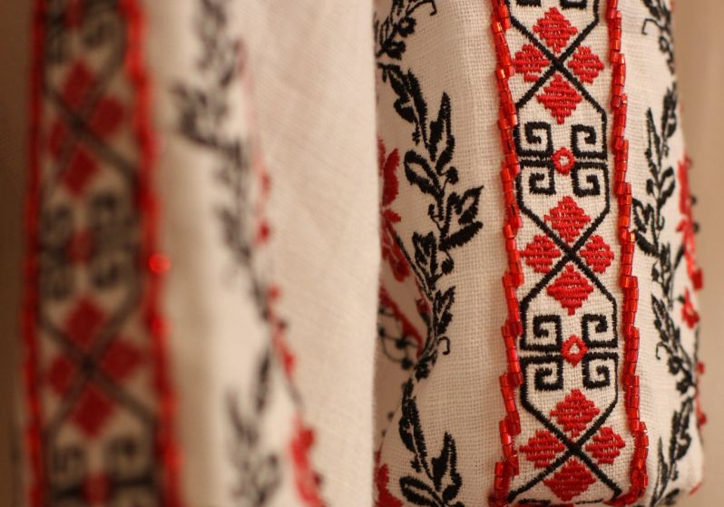

давайте ближче познайомимся зі стилями вишивки

яворівська вишивка
різновид української вишивки, притаманний Яворівському району Львівщини
Тут упродовж історії склалися свої методи гаптування (вишивка гладдю, що на Львівщині має назву гапт), що набули широкої популярності. Кожному виду одягу відповідала визначена техніка, колорит, орнаментальні мотиви.
Дізнатися більше

брокарівська вишивка
брокарівська вишивка
"мильна" вишивка
Тип орнаменту брокарівських вишивок – рослинно- геометризований. Він зумовлений технікою хрестика, завдяки якій контури будь-якого малюнка мають “східчасту” (зубчасту) будову. Від точного рахунку ниток тканини та діагонального перекриття верхніх стібків, які мають лягати в одному напрямку, залежала краса орнаменту.
Дізнатися більше